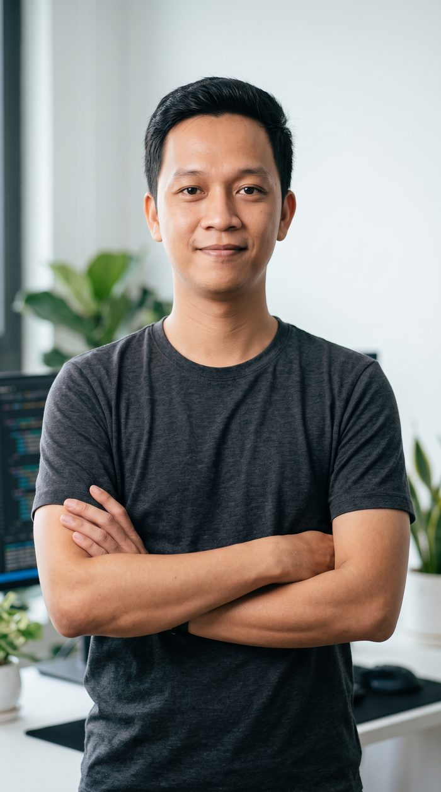
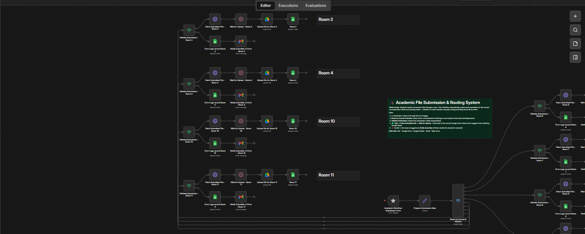
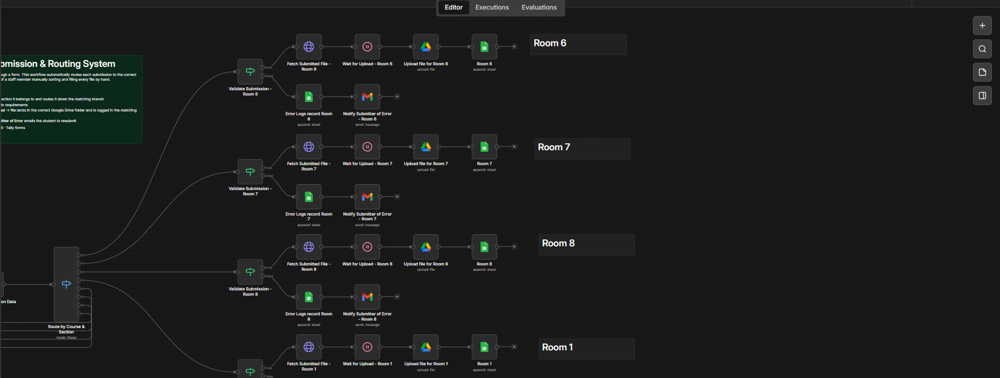
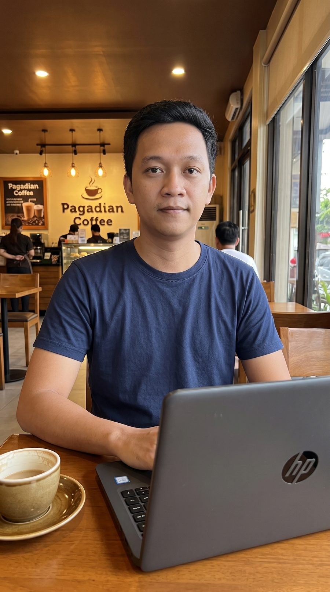
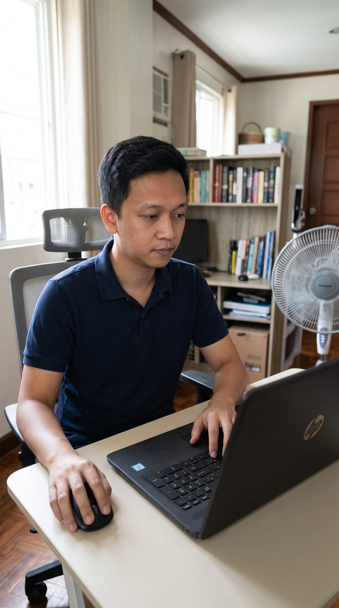

100%
I connect the tools your business already uses, so nothing needs manual work twice.
I build automated workflows with n8n, Zapier, and Make — CRMs, lead capture, follow-ups, and AI-assisted replies — so repetitive tasks run themselves.

Most businesses lose hours a week to work that a workflow could do instead. Here's where I usually start.
Custom CRM setups in n8n, Zapier, or Make that move leads through your pipeline without anyone re-typing data.
Linking forms, inboxes, spreadsheets, databases, and messaging apps like WhatsApp and Telegram into one flow.
New lead comes in, gets tagged, gets a reply, gets assigned — automatically, every time, no missed follow-ups.
GPT-based steps that draft replies, summarize conversations, or sort incoming data before a human touches it.
Turn a signed form or paid invoice into a fully set-up client folder, welcome email, and task list — hands-off.
Inherited a workflow that keeps failing silently? I'll debug it, rebuild the fragile parts, and document it.
We walk through what you're doing manually today — the tools involved, the repeated steps, where it breaks down.
I sketch the flow — triggers, conditions, and where each tool connects — before building anything, so there are no surprises.
I build it in n8n, Zapier, or Make depending on what fits your stack and budget, then run it against real scenarios.
You get a working system plus a plain-language explanation of how it works, so you're never locked to me to maintain it.
A real automation built for a school handling coursework submissions across multiple courses and sections.
Students submit coursework files through a form. Sorting and filing each submission into the right course folder and tracking sheet was done by hand — slow, and easy to get wrong at scale.
An n8n workflow reads each submission, routes it by course and section, validates it, then automatically uploads the file to the correct Google Drive folder and logs it in the matching Google Sheet. Anything invalid is logged separately and the student gets an automatic email asking them to resubmit — no manual sorting required.
One workflow now handles routing and filing across 8 course sections, each with its own validation, upload, logging, and error-notification path.


I got into automation the same way most people do — by getting tired of doing the same manual task every day and building a workflow to kill it. That turned into a habit of automating everything I could, and eventually into the main thing I want to do for clients.
Before automation, I spent three years as a software developer building web and mobile apps with React and React Native. That background is still useful — when an automation needs a custom interface, an API, or an app built around it, I can build that part myself instead of stitching together workarounds.


Tell me what you're doing manually right now — I'll tell you honestly whether it's worth automating.
dexterfreelaner2024@gmail.com · +63 951 099 4122